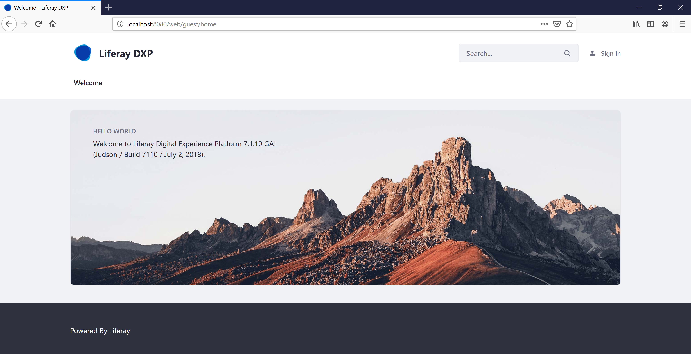

Using the Liferay Commerce Tomcat Bundle¶
The Liferay Commerce open source bundle is available for download from the Liferay Commerce Community Downloads page. The bundle contains the latest version of Liferay Commerce and Liferay Portal CE pre-deployed to Apache Tomcat.
Before obtaining the bundle, read the Liferay Commerce Compatibility Matrix for a list of supported technologies.
To use the Liferay Commerce bundle, follow these steps:
Get the Liferay Commerce Tomcat Bundle
Unzip the bundle to the target location.
Start the Tomcat bundle
Navigate to
$CATALINA_HOME/bin.Execute
./catalina.sh run.For Windows users, run:
catalina run
Wait until you see
org.apache.catalina.startup.Catalina.start Server startup in [x] millisecondsOpen your browser to
https://localhost:8080.
